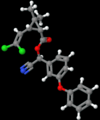

cypermethrin

Definition: Cypermethrin (CP) is a synthetic pyrethroid used as an insecticide in large-scale commercial agricultural applications as well as in consumer products for domestic purposes. It behaves as a fast-acting neurotoxin in insects. It is easily degraded on soil and plants but can be effective for weeks when applied to indoor inert surfaces. Exposure to sunlight, water and oxygen will accelerate its decomposition. Cypermethrin is highly toxic to fish, bees and aquatic insects, according to the National Pesticides Telecommunications Network (NPTN). It is found in many household ant and cockroach killers, including Raid, Ortho, Combat, ant chalk, and some products of Baygon in Southeast Asia.
Source: Wikipedia
Wikipedia Page (Something wrong with this association? Let us know.)
Wikidata Page (Something wrong with this association? Let us know.)